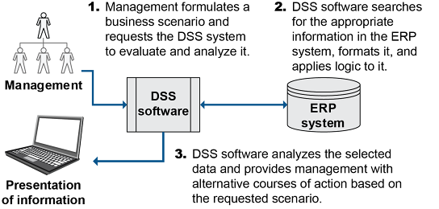

Master Data & MDM
Master data are static reference files (customer, supplier, product/SKU, BOM, inventory) that support all transactions. Master Data Management (MDM) is the discipline that coordinates the consistent use of master data across all systems and partners.
- Types of SC master data: customer/supplier files, product/SKU files, BOM and standard costs, PO data, order history, inventory data, logistics/shipment data, engineering data.
- Master data life cycle: Plan → Create & Process → Analyze/Use/Transfer → Maintain & Store → Archive → Destroy or Repurpose.
- Effectivity date: the date on which a new engineering specification replaces an old one. Critical for BOM accuracy.

Exhibit 2-19: Example of Master Data Life Cycle
Data Capture Methods & Challenges
📖 ASCM Definition — Automatic Identification System (AIS): a system that can encode product data and enter it automatically into a computer system. Used for tracking shipments, inventory, and WIP.
- Capture at source: best practice — avoids transcription errors from manual re-entry.
- Passive/automatic capture (RFID, barcode scanners) is more productive than manual entry.
- Real-time vs. batch: real-time is 10x+ more expensive; use batch where real-time isn’t required.
- Big data risk: too much data slows systems and reduces focus — collect what adds value.
- Challenges: fast-paced environments (best solution: passive/automated capture), hostile environments (special scanning equipment), language/literacy barriers (picture-based interfaces).

Exhibit 2-20: Automatic Identification System (AIS) Interface Points
Barcode, RFID & Decision Support
- 1D barcode (UPC): encodes product data in parallel lines. Requires line-of-sight scan. UPC-A is the standard 12-digit US barcode.
- 2D barcode (QR code): stores more data than 1D. Can encode URLs, text, serial numbers. Scanned by camera.
- RFID (Radio Frequency Identification): uses radio waves to identify tagged items. Does NOT require line of sight — can scan multiple items simultaneously. More expensive than barcodes but enables bulk scanning and tracking in motion.
- Decision Support System (DSS): uses master data and analytics to help managers make decisions (e.g., inventory reorder, network optimization, demand sensing).

Exhibit 2-24: Decision Support Systems (DSS)
TERM / CONCEPT
What is Master Data Management (MDM)?
ANSWER
A discipline that works alongside IT to coordinate the consistent definition, governance, and use of master data across all systems, departments, and supply chain partners.
Click card to flip · Use arrows or shuffle to practise
Question 1
Question 2
Question 3
Question 4